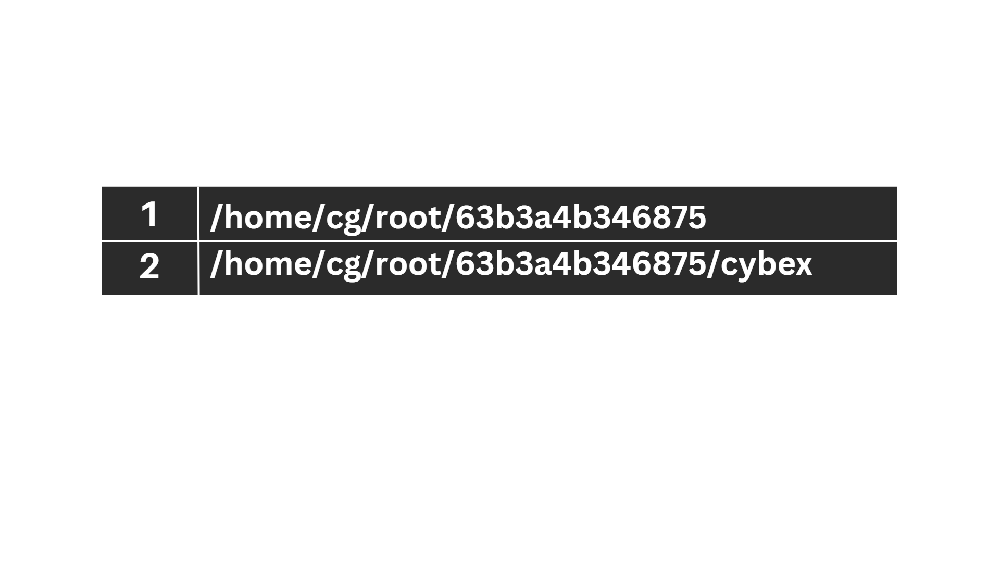
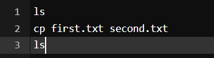

Linux Commands
Here we have put the 15 Basic Linux Commands that every Linux user(as a beginner) should know. These are not all that you should know, but these are the basic and most commonly used commands.
1. Is command
The ls command is commonly used to identify the files and directories in the working directory. This command is one of the many often-used Linux commands that you should know.
This command can be used by itself without any arguments and it will provide us the output with all the details about the files and the directories in the current working directory. There is a lot of flexibility offered by this command in terms of displaying data in the output. Check the below image for the output.

2. pwd command
The pwd command is mostly used to print the current working directory on your terminal. It is also one of the most commonly used commands.
Now, your terminal prompt should usually include the entire directory. If it doesn’t, this is a quick command to see which directory you’re in. Another purpose for this command is when creating scripts because it can help us find the directory in which the script was saved. The below pictures are the output with the command.
Command:
Output:

3. mkdir command
This mkdir command allows you to create fresh directories in the terminal itself. The default syntax is mkdir <directory name> and the new directory will be created.
For example, if you want to create a directory as "Cybex" then the basic syntax would be:
mkdir CybexIn case you want to create another directory inside the main directory Cybex to store projects, you can use the following command to do so. mkdir Cybex/projects
Command:
Output:
You can see we used ls first to see the directories present there and then mkdir to create another directory followed by ls to view the created directories.
4. cd command
The cd command is used to navigate between directories. It requires either the full path or the directory name, depending on your current working directory. If you run this command without any options, it will take you to your home folder. Keep in mind that it can only be executed by users with sudo privileges.
Command:
Output:
Here we used pwd to view the current directory for reference and then we used cd Cybex to switch the directory and with again pwd command we can see the output is the switched directory, i.e – Cybex
5. rmdir command
The rmdir command is used to delete permanently an empty directory. To perform this command the user running this command must be having sudo privileges in the parent directory.
Command:
Output:
Here we used the ls command to check the directories present there and used rmdir <directory name> to delete the directory and again the ls command to view the directories after deleting the same.
6. cp command
The cp command of Linux is equivalent to copy-paste and cut-paste in Windows.
Command:
Output:
The cp command of Linux is equivalent to copy-paste and cut-paste in Windows.
7. mv command
The mv command is generally used for renaming the files in Linux.
Command:
Output:
Here we used the ls command to check the directories and then used mv <file name> <Renamed file name> to rename the files, and then again we used the ls command to view the renamed file as you can see in the output screenshot.
8. rm command
rm command in Linux is generally used to delete the files created in the directory.
Command:

Output:

You can see as we wrote the ls command to view the files in the terminal and then rm <file name> to delete the files and again we had the ls command to check the update.
9. uname command
rm command in Linux is generally used to delete the files created in the directory.
Command: